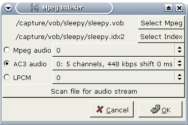
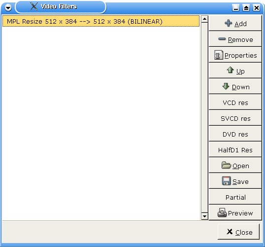
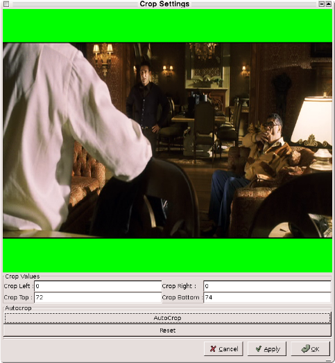
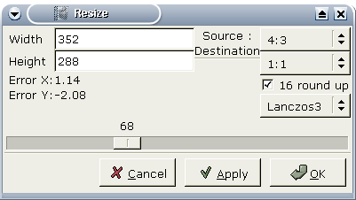
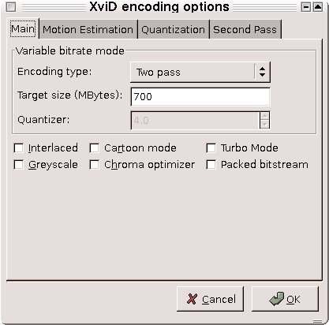
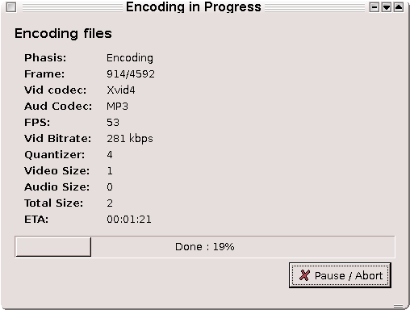

Mpeg to Divx tutorial
1.About this tutorial
This tutorial has been broken down into 6 chapters which explain the process of converting an MPEG1 or MPEG2 DVD file into a Mpeg4 ("divx") formatted AVI file. There are several projects available online which allow you to convert DVD's to DIVX avi, using tools such as the popular mencoder. The difference between Avidemux and these other projects, is that Avidemux allows you to edit the file before encoding it, and to do a visual check of what you are doing.
Understanding Mpeg file types
Supported Mpeg Formats
| Video Only |
Video & Audio |
| m1v |
mpg |
| m2v |
vob |
| x |
vdr (mpegTs) |
- m1v means "MPEG-1 Video", i.e. a file which only contains a so called elementary video stream, without any audio.
- m2v means "MPEG-2 Video"
- mpg is a program stream containing the multiplexed video and audio streams.
- vob is a DVD systems stream which contains video, audio and additional information, it is a also a program stream
- vdr is a transport stream containing video and audio(s). It is supported but without sync correction.
Getting a usable VOB file using mplayer
Code listing 1.1 |
mplayer dvd://1 -dumpstream |
This will create a file in your working directory called stream.dump. This is an avidemux compatible vob file in mpeg format with various audio streams
Loading and Indexing your Mpeg File
Load this stream.dump file into Avidemux by either clicking the "Open" folder icon in the toolbar, or going File->Open Video
You will now be presented with a dialog box asking if you would like to index the mpeg, say yes.

The following dialog box will ask you how you want to index your mpeg. Mostly, this is to choose the audio. Since I like doing things the easy way, we will click "Scan file for audio stream". This feature will read the vob file and present you with a dropdown list of audio stream choices. Generally the default, or first in the list is the best choice. Click "Ok" to begin indexing the mpeg. This may take a number of minutes depending on the speed of your machine.
Note: Avidemux does not read mpeg streams. It has been designed to read an mpeg stream index. An mpeg steam index is a plain text file containing a description of the mpeg and the location of frames throughout the stream. This file allows avidemux to random seek and stay accurate. Said otherwise, without the index, avidemux cannot handle mpeg files.
2.Editing features and options
NSTC versus Film
Some DVD are coded as 23.976 aka FILM (most movies actually). Some others are coded as 29.96 (NSTC), soap for example. In the first case, the DVD player does a operation to convert it on the fly to NSTC format (telecine). So the mpeg header always says 29.96 as it will always be the final format.
Avidemux uses mpeg2dec to decode mpeg streams (with a little patch). Mpeg2dec does not do the telecine on FILM movie (and that's better that way).
It means that avidemux cannot tell the difference between FILM and NSTC.
So if the mpeg looks progressive (not interlaced) and obvious desync appears (and gets worse and worse), use Misc->Change fps and set it to 23.976.
For PAL mpeg, there is no problem, it is always 25 fps.
If audio is present, avidemux will try to guesstimate if the video is 23.976 by comparing audio and video duration.
Cropping
Cropping is useful in removing the black borders along the top and bottom of the video in a widescreen format.
- To crop the video, we must apply some video filters. Before selecting the filters however, use the slider bar at the bottom to select a spot in the middle of the movie. The reason for this, is that auto crop feature will adjust the cropping based on the current frame.
- Now press F1 to popup the video filter list.

- Click "Add" and select the Crop filter.

- Now select the "AutoCrop" button. You'll notice the black areas will now appear in green to show the areas where the video will be cropped.
- If you like the way it looks click "Ok" and then close the video filters list.
Resizing
If you'd like to resize the video to something smaller, bring back up the video filter list. To correctly resize a video, it is very important to take the aspect ratio into account. The aspect ratio is the shape of a pixel. On a PC it is mostly square, however, on a DVD it could be 4:3 or 16:9. So, select the input aspect ratio (16:9 is the most common for DVD) and target aspect ration (1:1 for Avi, 4:3 or 16:9 for DVD). Then select the resizing method, bilinear is generally good enough for downsizing. You probably will want to check the 16 round up to be sure the final width and height are multiples of 16. Then move the slider until you reach the desired width.

More video filters
Depending on the source, you may want to add more filters (subtitling, denoiser, deinterlacer...). See video filters for more information on available filters. One of the best I've found is the "Mplayer Denoise 3D" filter. This filters smooths the image a bit. Default values on it are fine.
At this point, the video is ready for any editing you may wish to do. For information on cutting please see the Cutting Guide.
3.Configuring the encoder
Codec
Obviously we want to encode the video, so we set the video to process mode (F5).
Time to select a codec. My two preferred are Xvid and Lavcodec. You can use windows based tutorial for Xvid as the options are the same. For lavcodec, have a look in mplayer documentation.
Configuring the codec
Start by opening the codec selection dialog box by pressing F3. The Configure codec box should look something like this.

Now click in the codec options box and choose "xvid". After selecting the codec click the configure codec button. We are going to choose 2pass and ender in a final size for the video only. The audio size will be added to this to give you your total size.
4.Configuring the audio encoder
Before converting your DVD file to mpeg, you have a few choices for audio streams. There are Internal and External streams. Here is what I mean.
Internal audio
This means you use the audio stream you choose when indexing your vob file. If you would like to use a different audio stream from the stream.dump or vob file, you will need to re-index your file.
External audio
This is a feature that allows you to choose an external audio stream instead of the origional audio stream you selected when indexing your file. To select a different audio stream or track, navigate to Audio->source.
Audio codec
You have quite a few choices here for your codec.
- Uncompressed audio
- FFmpeg mpeg audio
- FFmpeg ac3 2 channel
- Toolame mp3
- Lame mp3
- FAAC
Let me review a few of my favorite options.
Uncompressed audio
This means PCM audio. Big, but lossless.
Lame mp3
This option allows you to create an avi with mp3 audio. The lame encoder does an excellent job at VBR encoding.
Do i want processing ?
Processing simply means whether or not to process any of the above steps we just walked through. For example, if you would like to leave your audio track the way it is, and not use a different codec such as mp3, then you don't want processing.
If there are any audio filters which you wish to apply, then you will need to process the audio. Audio filters can be selected by pressing F2 then choosing the appropriate filter. For more information on audio filters, check audio filters
If you would like to process your audio simply press F6
5.Saving
Now select File->Save avi and wait a few hours. Done.
Avidemux will do pass 1 then pass2 and encode the audio.

|